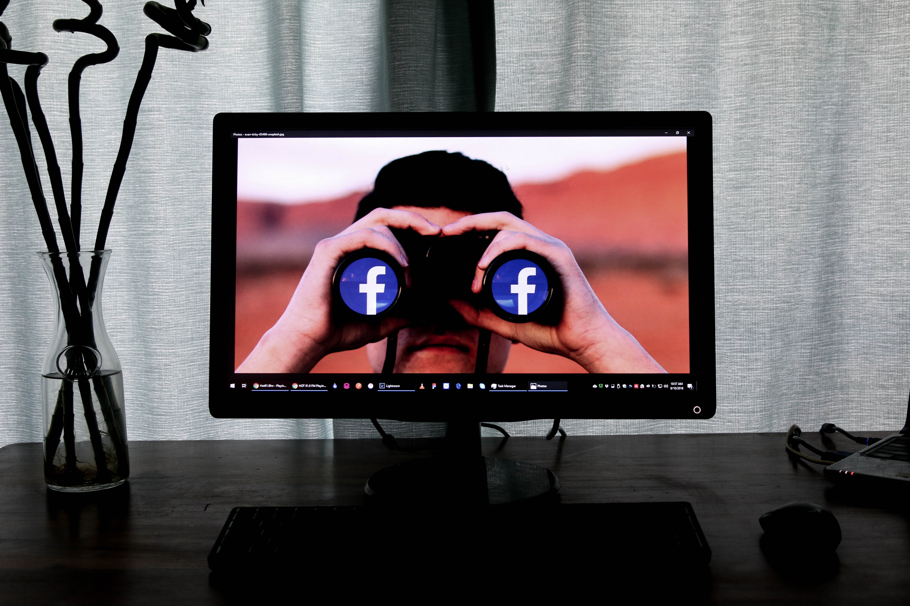

Facebook is an online social media and social networking service owned by American technology giant Meta Platforms. Created in 2004 by
<
| name |
id |
dept |
+
| ragavi |
100 |
cse |
| name |
id |
| email |
sri@gmail.com |
| sri@gmail.com |
| sru@gmail.com |
| food name |
price |
review |
| briyani |
200 |
good |
| samber |
100 |
good |
| batham |
50 |
very good |
facebook
Facebook is an online social media and social networking service owned by American technology giant Meta Platforms.
Created in 2004 by Mark Zuckerberg with fellow Harvard College students and roommates Eduardo Saverin, Andrew McCollum, Dustin Moskovitz, and Chris Hughes, its name derives from the face book directories often given to American university students.
gradually expanding to otherNorthfacebook Contents American universities and, since 2006, anyone over 13 years old . As of December 2022, Facebook claimed 2.96 billion monthly active users
and ranked third worldwide among the most visited websites
n mid-2004, Napster co-founder and entrepreneur Sean Parker—an informalSean Parker called Reid Hoffman to fund Facebook. However, Reid Hoffman was too busy launching LinkedIn so he set Facebook up with PayPal co-founder Peter advisor to Zuckerberg—became company president.[29] In June 2004, the company moved to Palo Alto, California
history
2003–2006: Thefacebook, Thiel investment, and name change
Zuckerberg built a website called"Facemash" in 2003 while attending Harvard University . The site was comparable to Hot or Not and used "photos compiled from the online face books of nine Houses,placing two next to each other at a time and asking users to choose the "hotter" person
Facemash attracted 450 visitors and 22,000photo-views in its first four hours .[14] The site was sent to several campus group listservs, but was shut down aA "face book" is a student directory featuring photos and personal information.[14] In 2003, Harvard had only a paper version[16] along with private online directories few days later by Harvard administration.
In May 2006, Facebook hired its first intern, facebook history Zhuo.[37] After a month, Zhuo was hired as a full-time engineer.[37] On September 26, 2006, Facebook opened to everyone at least 13 years old with a valid email address.
days after the site launched, Harvard seniors Cameron Winklevoss, Tyler Winklevoss, and Divya Narendra accused Zuckerberg of intentionally misleading them into believing that he would help them build a social network called HarvardConnection.com. They claimed that he was instead using their ideas to build a competing product
In May 2007, at the first f8 developers conference
Facebook announced the launch of the Facebook Developer Platform, providing aframework for software developers to create applications that interact with core Facebook features.
website
CDN uses its own content delivery network or "edge network"
under the domain fbcdn.net for serving static data under the domain fbcdn.net for serving static data.[227][228] Until the mid 2010s, Facebook also relied on Akamai for CDN services
The facebookEach registered user on Facebook has a personal profile that shows their posts and content.
News Feed appears on every user's homepage and highlights information including profile changes
facebook Facebook is an online social media and social networking service owned by American technology giant Meta Platforms. Created in 2004 by Mark Zuckerberg with fellow Harvard College students and roommates Eduardo Saverin, Andrew McCollum, Dustin Moskovitz, and Chris Hughes, its name derives from the face book directories often given to American university students.
face book name change facebook code problem
IMPECT
Economists have noted that Facebook offers many non-rivalrous services that benefit as many users as are interested without forcing users to compete with each other. By contrast, most goods are available to a limited number of users. E.g., if one user buys a phone, no other user can buy that phone. Three areas add the most economic impact: platform competition, the market place and user behavior data.[60
 facebook impact" A commentator in The Washington Post noted that Facebook constitutes a "massive depository of information that documents both our reactions to events and our evolving customs with a scope and immediacy of which earlier historians could only dream
facebook impact" A commentator in The Washington Post noted that Facebook constitutes a "massive depository of information that documents both our reactions to events and our evolving customs with a scope and immediacy of which earlier historians could only dream

- ragvi
- raji
- revathi
coffe
- cold coffe
veg
- veg dish
- veg friedrice
- potota fry
- samber recipe
- brinjal currey
.jpg)
- non veg
- briyani
- fish fry
- chicken rice
- crab fry
- drinks
- batham juice
- rose milk
- promgrant juice